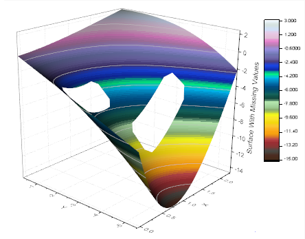
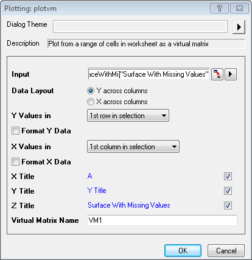
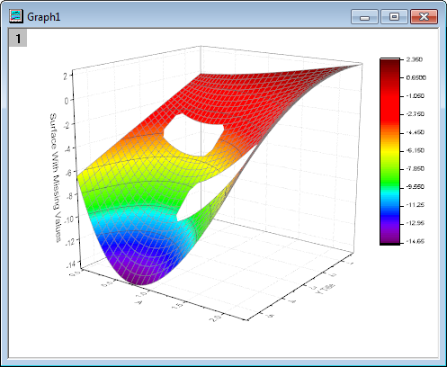
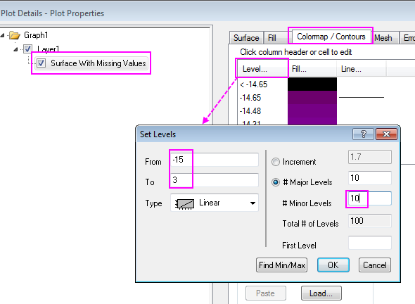
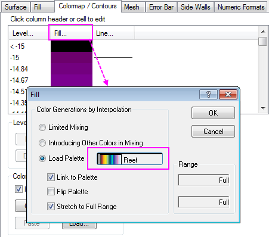
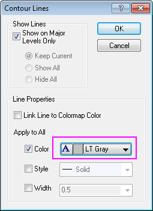
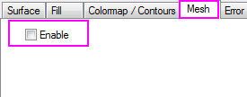
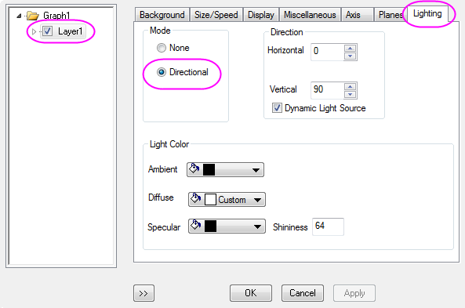
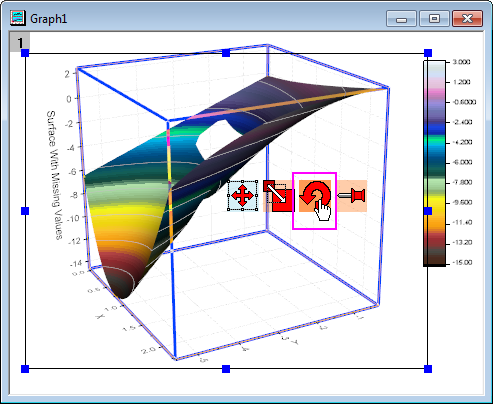

Oberfläche mit fehlenden Werten
3D-Surface-With-MissingVal
Zusammenfassung
In diesem Tutorial wird ein farbkodiertes 3D-Oberflächendiagramm aus einer Matrix mit fehlenden Werten erstellt. Es wird gezeigt, wie Gitternetzlinien durch eine benutzerdefinierte Anpassung übersprungen werden können.
- 
Origin-Version mind. erforderlich: Origin 2015 SR0
Was Sie lernen werden
Dieses Tutorial zeigt Ihnen, wie Sie:
- ein 3D-Oberflächendiagramm aus einer Matrix durch Ignorieren fehlender Werte erstellen,
- Gitternetzlinien eines 3D-Oberflächendiagramms überspringen,
- Konturlinien festlegen,
- Konturebenen und Füllfarben festlegen.
Schritte
- Öffnen Sie ein neues Arbeitsblatt und importieren Sie die Datei \Samples\Graphing\Surface With Missing Values.dat. Fahren Sie mit der Maus über die Zelle oben links im Arbeitsblatt, bis der Cursor ein schräger schwarzer Pfeil ist und klicken Sie, um das gesamte Blatt zu markieren. Wählen Sie Zeichnen: 3D: 3D-Farbabbildung im Origin-Hauptmenü, um ein Diagramm zu erstellen. Dies ist eine virtuelle Matrix, so dass der Dialog plotvm (Dialog zum Zeichnen der virtuellen Matrix) angezeigt wird. Verwenden Sie die Standardeinstellungen des Systems:
- 
- Das Diagramm sollte folgendermaßen aussehen:
- 
- Klicken Sie zum Öffnen des Dialogs Details Zeichnung doppelt auf das Diagramm. Wenn das linke Bedienfeld nicht erweitert ist, verwenden Sie die Schaltfläche
 unten links im Dialog, um dies zu tun. Erweitern Sie den Zweig im linken Bedienfeld, um sicherzustellen, dass das Feld unter Layer 1 aktiviert ist. In den nächsten Schritten wird das Diagramm mit Hilfe der Einstellungen im Dialog Details Zeichnung benutzerdefiniert angepasst. Aktivieren Sie die Registerkarte Farbpalette/Kontur im rechten Bedienfeld. Klicken Sie auf die Überschrift Ebene, um den Dialog Ebenen festlegen zu öffnen und die Optionen, wie im folgenden Screenshot zu sehen, festzulegen:
unten links im Dialog, um dies zu tun. Erweitern Sie den Zweig im linken Bedienfeld, um sicherzustellen, dass das Feld unter Layer 1 aktiviert ist. In den nächsten Schritten wird das Diagramm mit Hilfe der Einstellungen im Dialog Details Zeichnung benutzerdefiniert angepasst. Aktivieren Sie die Registerkarte Farbpalette/Kontur im rechten Bedienfeld. Klicken Sie auf die Überschrift Ebene, um den Dialog Ebenen festlegen zu öffnen und die Optionen, wie im folgenden Screenshot zu sehen, festzulegen:
- 
- Klicken Sie auf die Überschrift Füllung, um den Dialog Füllung zu öffnen. Wählen Sie in diesem Dialog die Option Palette laden und klicken Sie dann auf die Schaltfläche Palette auswählen, um die Palette Reef auszuwählen. Stellen Sie sicher, dass das Kontrollkästchen Mit Palette verknüpfen aktiviert ist. Klicken Sie auf OK, um zum Dialog Details Zeichnung zurückzukehren.
- 
- Klicken Sie auf die Überschrift Linie, um den Dialog Konturlinien zu öffnen. Aktivieren Sie das Kontrollkästchen Farbe unter Auf alle anwenden und wählen Sie die Farbe Hellgrau. Klicken Sie auf OK, um zum Dialog Details Zeichnung zurückzukehren.
- 
- Aktivieren Sie die Registerkarte Drahtgitter im rechten Bedienfeld. Deaktivieren Sie das Kontrollkästchen vor Aktivieren, wie im folgenden Screenshot gezeigt. Klicken Sie auf Übernehmen. In der Folge werden die Linien des Drahtgitters aus dem Diagramm entfernt:
- 
- Wählen Sie Layer1 im linken Bedienfeld und wechseln Sie zur Registerkarte Beleuchtung im rechten Bedienfeld. Wählen Sie unter Modus die Option Direktional. Klicken Sie auf OK, um die Einstellung zu speichern, und schließen Sie den Dialog.
- 
- Klicken Sie doppelt auf die Achsentitelobjekte, um für diese X und Y für die X- bzw. Y-Achse einzugeben.
- Klicken Sie in den Layerraum, um die Symbolleiste zum Drehen von 3D-Diagrammen zu aktivieren, und drehen Sie dann mit Hilfe der Schaltfläche Drehen das 3D-Diagramm in die gewünschte Richtung:
- 
- Das Diagramm sollte am Ende folgendermaßen aussehen: